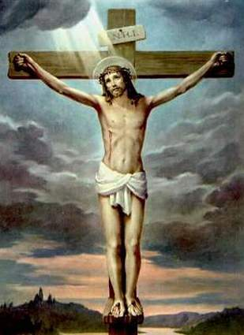

|  |
|
Quel est le rôle de Marie pour nous ?
L’Eglise en questionsA quoi sert l’Eglise ?Aujourd’hui, beaucoup disent : « Oui à Dieu, non à l’Eglise ! » C’est vrai, on entend cette critique. Mais que vise ce « Non » à l’Eglise ?« Non » à l’Inquisition, aux guerres de religion, à une morale rigide par exemple !Je sais bien que l’Eglise catholique n’a pas toujours été fidèle à l’Evangile*. Le pape Jean-Paul II a publiquement demandé pardon pour les fautes graves commises par des chrétiens. Mais n’oublions pas tout ce à quoi elle a contribué dans nos sociétés : l’assistance aux démunis, les hôpitaux, les maisons de retraite, l’éducation gratuite des enfants pauvres… N’oublions pas les saints et saintes et tous les témoins de la bonté et des combats pour la justice jusqu’à notre époque : Thérèse de Lisieux, Mère Teresa, l’Abbé Pierre et tant d’autres, qui ont agi au nom de la foi et en lien avec l’Eglise.Aujourd’hui ; à quoi sert l’Eglise ?L’Eglise reçoit de Dieu cette triple mission : annoncer l’Evangile ; célébrer les sacrements qui communiquent la vie spirituelle ; servir tout homme. Dans un monde qui change à toute vitesse, elle est comme une mère qui transmet l’essentiel : l’amour, la foi, l’espérance, la prière et la fraternité. Elle est une famille universelle qui rassemble des gens très différents, enfants, jeunes et adultes. C’est aussi pour cela que de nombreux parents, pas toujours pratiquants, envoient leurs enfants au catéchisme.Pourquoi y-a-t-il plusieurs Eglises chrétiennes ?Jésus a voulu fonder une seule Eglise, appelée « catholique », puisque cet adjectif signifie en grec « universel » Mais, au cours du temps, les chrétiens n’ont pas toujours su rester unis. On doit dire que toutes les communautés chrétiennes forment une seule Eglise avec des liens plus ou moins forts entre elles. Cependant ce qui les unit (foi en, Jésus-Christ, baptême, Bible…) est plus important que leurs divergences. L’œcuménisme est le nom donné à la recherche de l’unité de tous les chrétiens, que l’Eglise catholique soutient résolument.Et toi, pourquoi es-tu membre de l’Eglise catholique ?Parce que l’Eglise me fait découvrir Dieu et Jésus-Christ ; parce qu’elle me nourrit par les sacrements ; parce que j’ai besoin des autres chrétiens pour prier et approfondir ma foi ; parce qu’enfin je m’y sens libre. Libre ?! Oui, libre. >j’ai toujours pu mener ma recherche de foi, poser mes questions, même les plus provocatrices, et je sais que je pourrais m’en aller sans être ensuite « persécuté ». l’Eglise n’est ^pas une secte : elle désire proposer et partager la foi mais en l’impose pas.Pourtant les « dogmes », on est bien obligé d’y croire ?Les dogmes sont les vérités fondamentales que Dieu a fait connaître aux chrétiens. Par exemple, reconnaître Jésus comme le Fils de Dieu, affirmer sa résurrection, croire en l’Esprit Saint. Affirmer le contraire vide la foi catholique de son sens profond. Bref, les dogmes indiquent l’essentiel : à nous d’y réfléchir pour bien les comprendre et en vivre. Mais tous les dogmes et les enseignements n’ont pas la même importance. C’est pour cela que l’Eglise dit qu’il y a une « hiérarchie des vérités de la foi ». Enfin, certaines prises de position de l’Eglise catholique sont liées à l’actualité et peuvent évoluer.Es-tu toujours d’accord avec ton Eglise ?L’Evangile me passionne, Jésus m’attire et je suis à l’aise dans l’Eglise… donc sur le fond, je suis le plus souvent « d’accord ». Si je ne suis pas d’accord avec une prise de position catholique « officielle ; », je ne prétends pas avoir raison pour autant ! J’essaie de la comprendre en lien avec le message du Christ, cela me fait réfléchir, et parfois changer d’avis.A t’entendre, on dirait que tu adhères à un parti politique et à son programme…Un parti politique se forme lui-même pour défendre un programme. L’origine de l’Eglise est différente : c’est Jésus-Christ qui a rassemblé autour de lui les apôtres et leur a donné son Esprit pour annoncer l’Evangile* ; C’est pourquoi on appelle l’Eglise le « Corps du Christ » car tous les chrétiens y sont unis comme les membres du corps humain. Notre tête, c’est Jésus ressuscité ; le seul programme qu’il nous a donné, c’est l’amour de Dieu et de tout homme.Pourtant, comme les partis, l’Eglise catholique a une organisation hiérarchique !Par le baptême, tous les chrétiens sont égaux ; c’est pourquoi l’Eglise est aussi appelée le « Peuple de Dieu ». Pour guider ce peuple en son nom, Jésus a choisi saint Pierre et les autres apôtres. Aujourd’hui, les successeurs des apôtres sont le Pape et les évêques : ils sont appelés par le Christ à garantir l’unité des catholiques dans la diversité. Mais l’Eglise ne fonctionne pas comme un parti ou une entreprise ! Par exemple, une paroisse dispose d’une grande autonomie pour organiser ses activités : beaucoup de chrétiens et chrétiennes y exercent des responsabilités avec les prêtres et diacres nommés par l’évêque.Je ne me sens pas proche de l’Eglise : alors que peut-elle m’apporter ?L’Eglise propose de te faire connaître Dieu et ‘l’spéerance qu’il donne : la vie éternelle. C’est ce qu’elle appelle le salut. Si tu désires prier, une église ouverte n’est pas loin pour t’y recueillir. Si tu traverses des difficultés, des chrétiens peuvent te soutenir. Si tu veux mener une vie juste, l’Eglise t’offre des valeurs morales fortes : le respect de tout homme, le souci des plus pauvres ; l’importance de la famille, la recherche de la paix et de la justice. Enfin, l’Eglise donne sens aux moments importants de la vie : naissance, mariage, décès…Mais j’ai l’impression que l’Eglise ne vit pas avec son temps. Qu’en penses-tu ?L’Eglise porte en elle l’éternité … la foi ne suit pas les les modes mais Jésus ! Par contre la manière d’exprimer la foi doit s’adapter à notre époque : les catholiques essaient de le faire, avec prudence. Ainsi, le concile Vatican II** a introduit des réformes (de la messe par exemple) pour que la foi chrétienne soit mieux comprise, et aujourd’hui, l’Eglise catholique surfe sur internet !Peut-on devenir chrétien à tout âge ?Biens sûr ! Chaque année, de plus en plus, des milliers d’adultes en France, de tout âge et de toute origine, reçoivent le baptême : la foi catholique continue d’intéresser l’homme moderne ! Et dans un monde à la recherche de repères, l’Eglise propose une boussole précieuse : Jésus-Christ.Et comment se rapprocher de l’Eglise ? Par un ami, un membre de la famille, un collègue chrétien qui va nous guider ; les paroisses ont des permanences d’accueil, on peut aussi simplement téléphoner pour prendre rendez-vous avec un prêtre et lui expliquer sa recherche. Se décider à faire le premier pas est difficile, mais on découvre vite que chacun peut trouver sa place dans l’Eglise. Alors, bienvenue ! *Evangile : ce mot signifie « Bonne Nouvelle » en grec. Il ne désigne pas seulement les quatre évangiles qui racontent la vie de Jésus, mais l’ensemble du message chrétien. **Concile Vatican II : Entre 1962 et 1965, le pape a réuni les évêques du monde entier pour réfléchir à la mission de l’Eglise catholique dans le monde d’aujourd’hui. |
|||
Les images de la vierge Marie |
|||||
|
designed by Jean Lionel Tel : 79614036 designed by IGIRANEZA Nina Tel : 79614036 |
|||||